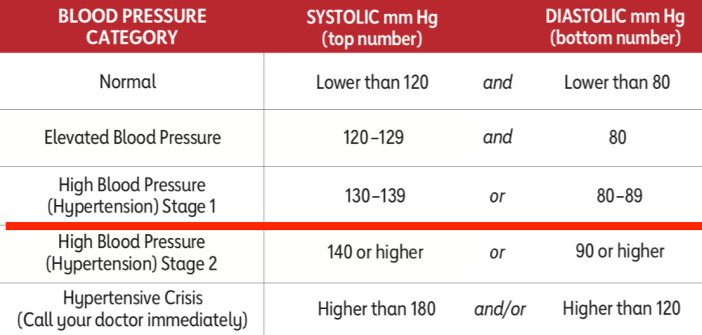

ಬಿಪಿಯನ್ನು ಹೇಗೆ ನಿಯಂತ್ರಿಸುವುದು?

- ನಿಗದಿತ ಔಷಧಿಗಳನ್ನು ತೆಗೆದುಕೊಳ್ಳಿ; ಚಿಕಿತ್ಸೆಯ ಅನುಸರಣೆಯೊಂದಿಗೆ ನಿಯಮಿತವಾಗಿರಿ. ನಿಮ್ಮ ಸ್ವಂತ ಚಿಕಿತ್ಸೆಯನ್ನು ನಿಲ್ಲಿಸಬೇಡಿ.
- ಹೆಚ್ಚು ಹಣ್ಣುಗಳು, ಧಾನ್ಯಗಳು, ದ್ವಿದಳ ಧಾನ್ಯಗಳು ಮತ್ತು ತರಕಾರಿಗಳನ್ನು ಸೇವಿಸಿ.
- ಸಾಕಷ್ಟು ನಿದ್ರೆ ಮಾಡಿ, ಕನಿಷ್ಠ 6 ಗಂಟೆ.
- ದೈಹಿಕವಾಗಿ ಸಕ್ರಿಯರಾಗಿರಿ- ಕನಿಷ್ಠ 90-150 ನಿಮಿಷಗಳ ಏರೋಬಿಕ್ ಚಟುವಟಿಕೆ (ಉದಾ- ಚುರುಕಾದ ನಡಿಗೆ / ಜಾಗಿಂಗ್ ).
- ಆರೋಗ್ಯಕರ ತೂಕವನ್ನು ಕಾಪಾಡಿಕೊಳ್ಳಿ. ಧೂಮಪಾನ ಧೂಮಪಾನ; ಮದ್ಯವನ್ನು ಮಿತಿಗೊಳಿಸಿ.
- ಹೆಚ್ಚುವರಿ ಉಪ್ಪು, ಕೆಂಪು ಮಾಂಸ, ಸಂಸ್ಕರಿಸಿದ ಆಹಾರ, ಬೇಕರಿ ವಸ್ತುಗಳನ್ನು ಸೇವಿಸಬೇಡಿ.
- ಧ್ಯಾನ ಅಥವಾ ಯೋಗವನ್ನು ಅಭ್ಯಾಸ ಮಾಡಿ, ಒತ್ತಡವನ್ನು ಕಡಿಮೆ ಮಾಡುವ ಹವ್ಯಾಸಗಳನ್ನು ಬೆಳೆಸಿಕೊಳ್ಳಿ. ಸಾಮಾಜಿಕವಾಗಿ ಸಕ್ರಿಯ ಜೀವನವನ್ನು ಹೊಂದಿರಿ.
ಮನೆ ಬಿಪಿಯನ್ನು ಹೇಗೆ ಅಳೆಯುವುದು?